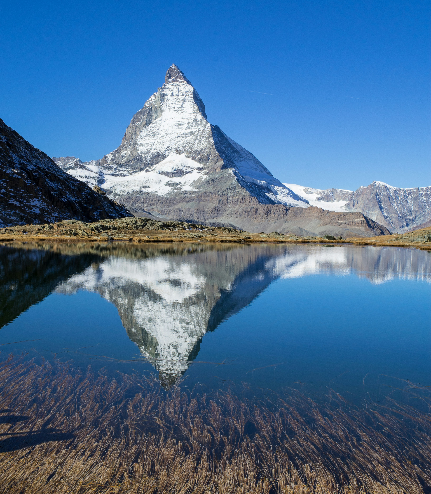
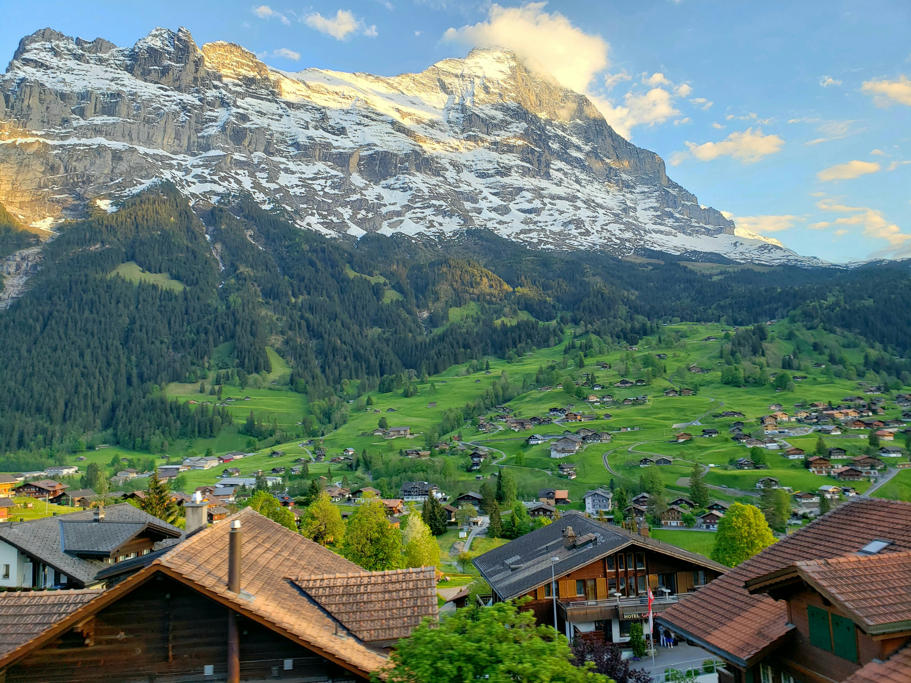

Swiss Alps
Along with the Swiss Plateau and the Swiss section of the Jura Mountains, the Alpine region of Switzerland—conventionally known as the Swiss Alps—represents a key natural feature of the nation. Comprising an area sometimes known as Central Alps, the Swiss Alps stretch over the Western and Eastern Alps. The southern ranges from the Mont Blanc massif to the Bernina massif are shared with other nations like France, Italy, Austria and Liechtenstein; the northern ranges from the Bernese Alps to the Appenzell Alps are totally in Switzerland.
 